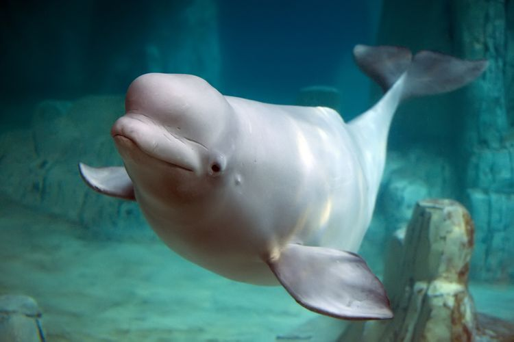

Beluga
The beluga whale (Delphinapterus leucas) is a small, toothed whale that is white as an adult. They are found in coastal areas of the Arctic Ocean, and travel south when the sea ice forms.The beluga's body is stout and has a small, blunt head with a small beak, tiny eyes and thick layers of blubber. On their head they have a round shape called the melon. This melon holds oil, and the whale is able to change its shape. Scientists believe that it has something to do with the whale's echolocation system. They have one blowhole. Beluga means white one in Russian.
Its genus Delphinapterus, means "whale without fins", and the species, leucas, means "white". The beluga is also called the white whale, the white porpoise, the sea canary (because of its songs), and the squid hound (due to its diet). Unlike most other cetaceans, the beluga's seven neck vertebrae are not fused, giving it a flexible, well-defined neck.
A baby beluga whale, called a calf, is a grey or even brown color when it is born. It will gradually become white over the next five years as it becomes an adult. They grow up to 6.1 m (20 ft) in length and weigh up to 1,361 kg (3,000 lb). They live for between 35 and 50 years of age. A female beluga whale will have one calf every 3 or 4 years. These are born near the coast, often near the entrance to large rivers. The calfs are fed on milk which is 30% fat.
The beluga whales live in groups, called pods of anywhere from only three whales to large groups of more than 200. they can dive down to depths of 800 m (2,625 ft) and stay underwater for as long as 25 minutes. Polar bears and killer whales are known to hunt beluga whales. - Wikipedia